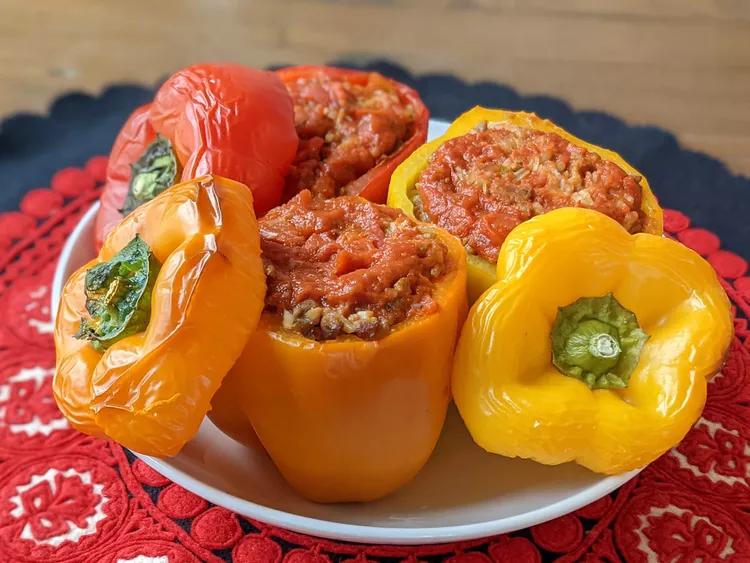

Stuffed Peppers

Stuffed peppers with ground beef and rice are topped with a seasoned
tomato sauce.
Ingredients:
- 1 cup cold water
- ½ cup uncooked long grain white rice
- 1 tablespoon vegetable oil
- 1 pound ground beef
- 6 medium green bell peppers
- 16 ounces tomato sauce, divided
- 1 tablespoon Worcestershire sauce
- ¼ teaspoon garlic powder
- ¼ teaspoon onion powder
- salt and ground black pepper to taste
- 1 teaspoon Italian seasoning
Steps:
-
Cook rice until tender in a covered saucepan. Meanwhile, cook ground
beef in a skillet until browned and crumbly.
-
Hollow the bell peppers by cutting off the tops and scooping out the
seeds and membranes. Arrange the peppers in a single layer in a baking
dish. Stuff the peppers with a prepared filling of rice, ground beef,
tomato sauce, Worcestershire sauce, garlic powder, onion powder, salt,
and pepper. Top each filled pepper with a mixture of tomato sauce and
Italian seasoning.
-
Bake until the peppers are tender, basting with sauce every 15 minutes.